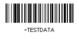
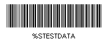

| Home | Products | Demos | Support | Integration | Barcode FAQ | Order Now | Contact Us |
|
|
||||||||
|
||||||||
|
|
This guide provides documentation, examples, software and source code for the integration of handheld USB and keyboard wedge barcode scanners. Using these guidelines, hand held scanners may be easily integrated with existing or custom applications as automation, input and verification devices.
RS232 (serial port) barcode scanners have been commonly used as input devices for several decades. RS232 scanners work very well in their legacy applications, although their implementation is complex because it requires that the application monitor and access the RS-232 API. In addition, some new computer systems on the market today do not contain RS232 ports and the serial port is a slow communication device. USB and keyboard wedge scanners overcome these limitations by emulating the keyboard so that anything scanned appears at the cursor as if it had been typed in from the keyboard. The guidelines presented here offer several implementation options.
|
Scanning data directly into the field on the form |
Scanning data directly into a field is the simplest of all implementations. The cursor is placed in the appropriate field that is to receive the data from the scan and the trigger is pressed on the scanner. After the trigger is pressed, the data appears at the cursor as if it had been typed from the keyboard. This method may also be automated to include functions such as tabs and returns - even in web browsers and custom applications.
|
Program the application to monitor for specific characters that trigger an operation |
With this implementation, the cursor may be anywhere on the form. The application is programmed to respond to a specific character that is not frequently used. In this example, Visual Basic 6 is used to respond to the tilde "~" character. However, applications may be programmed to respond to any character that is not used for any other purpose in the application.
To implement this example in Visual Basic 6, KeyPreview must be set to True so the scanned data is evaluated:
Private Sub Form_Load() Scanner_Activation_Form.KeyPreview = True End Sub
Code is then placed in the application that will respond to the specific character when scanned. ASCII 126 (the tilde key) is used to start the process in this example. The tilde key may also be entered from the keyboard to manually start the process.
Private Sub Form_KeyPress(KeyAscii As Integer)
If KeyAscii = 126 Then
KeyAscii = 0
ScannedData.Text = InputBox("Enter Data:")
End If
End Sub
After the data is scanned, the return function in the barcode chooses the "OK" button after the data is automatically entered into the text box. The character that triggers the process may either be encoded in a barcode (as in the examples below) or added as a preamble character in the scanner.
The trigger process may easily be tested with a barcode scanner and the sample application. If the sample application example fails to execute, the VB 6 runtime files may need to be installed. Scan the barcodes below with the application open for an implementation example. The bar-codes below encode a tilde at the beginning. Most modern scanners such as the IDAutomation SC5 USB Barcode Scanner automatically send a return function by default after the data is scanned. Therefore, a return function at the end of the barcode may not need to be encoded. The barcodes below may be reproduced with any of IDAutomation's barcode applications, barcode font tools and barcode components including the free online barcode image generator.
Code 128 barcode:
Created by encoding ~TESTDATA
into code 128. With Code 128 auto selected and ApplyTilde enabled, A return
function may be added to the end of the barcode by encoding
~TESTDATA~013.
(This
image was created with IDAutomation's
free on-line
barcode image generator)
Code 39 barcode:
Created by encoding %STESTDATA
into Code 39.
When using the Code 39 Barcode Font, *%STESTDATA*
may be used. A return function may be added to the end of the barcode by
encoding %STESTDATA$M.
(Note: Extended code 39 must be enabled in the scanner for the tilde and
return functions to work)
(This
image was created with IDAutomation's
free on-line
barcode image generator)
|
Program a preamble specific character in the scanner that triggers an operation |
Most modern scanners such as the IDAutomation SC5 USB Barcode Scanner have the ability to encode preamble characters. IDAutomation recommends using the GS character which is ASCII 29 for this operation. Then you will program your application to respond to this character as mentioned above, for example:
Private Sub Form_KeyPress(KeyAscii As Integer)
If KeyAscii = 29 Then
KeyAscii = 0
ScannedData.Text = InputBox("Enter Data:")
End If
End Sub
|
How to program a bar code scanner to emulate pressing a function key |
Very few Keyboard Wedge or USB Scanners can simulate pressing a function key from the keyboard. However, if this operation is needed, the IDAutomation SC5 USB Barcode Scanner can emulate all function keys as well as other keys such PgUp, PgDn, Backspace, Tab, Enter, Esc, Insert, Delete, Home and End. To activate this ability, simply enable "Function Key Emulation Mode" by scanning the appropriate barcode in the manual. Using this method, lower ASCII codes in a Code 128 barcode will simulate pressing a key on the keyboard. For example, an ASCII 23 (0x17 in the manual) digit encoded in a bar-code will send the same codes to your computer as if you pressed the F7 function key. Because the scanner manual only lists hexadecimal numbers, it may be necessary to refer to the ASCII chart for conversions.
|
Automate scanning with functions such as tabs and returns |
Scanning may be automated to include functions such as tabs and returns - even in web browsers and custom operating systems. Tabs and returns may offer additional automation possibilities. For example, a single barcode may enter data in one field, tab to another, enter more data and choose the default button (a return) to perform a record lookup. The functions may be programmed into the barcode scanner or encoded directly in the barcode itself. Information about encoding tabs and returns into barcodes is available in the Code 39 FAQ and the Code 128 FAQ.
|
Technical Support |
Free support for hardware may be obtained by contacting the appropriate vendor of the scanner. Many other problems and solutions are provided at IDAutomation's support site and by searching resolved public help desk issues. Priority phone, email and help desk support is provided up to 30 days after a purchase of a software product. Additional priority phone, email and help desk support may be obtained if the Priority Support and Upgrade Subscription is active for a software product.
|
Hand held and USB bar code scanners available |
IDAutomation offers many easy-to-use handheld and USB bar code scanners including:
|
Software available for the printing of bar codes |
IDAutomation offers many products that print and/or create bar-codes including:
|
|
|
Product Quick Links: [Barcode Fonts | Font Tools | Components | Label Software | Scanners | Printers | RFID | Product Index] |
Copyright © 2000-2006 IDAutomation.com, Inc. IDAutomation and BizFonts are registered trademarks of IDAutomation.com, Inc. All other trademarks mentioned are the property of their respective owners.
|
Over 70% of Fortune 100 companies use our products to automate their businesses. |